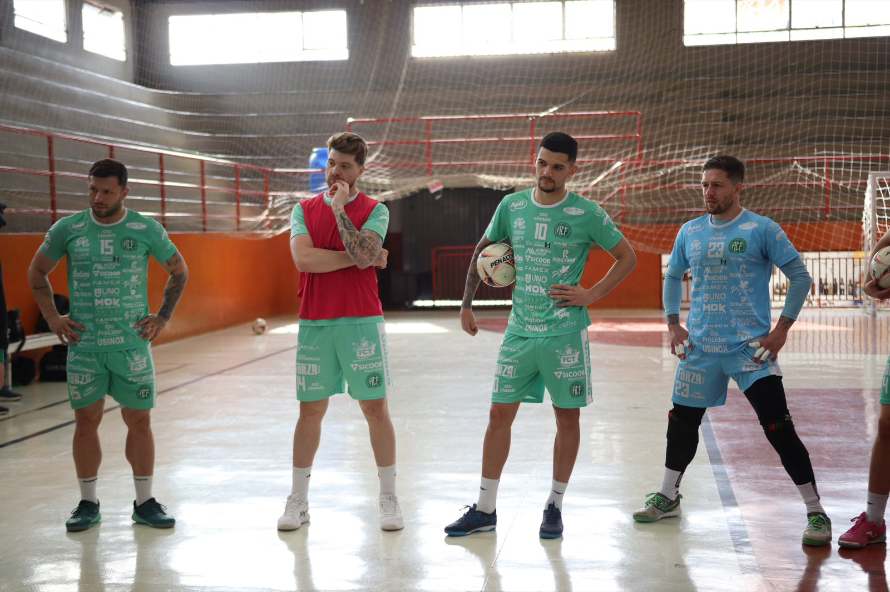
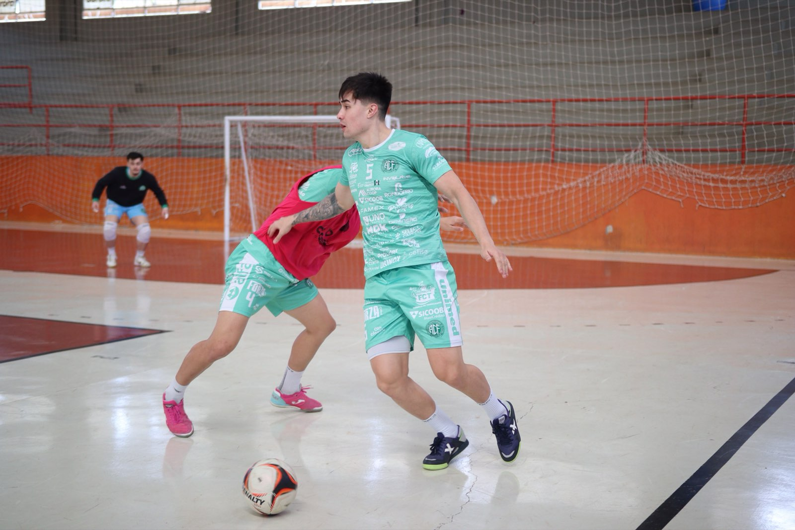

Quarta-feira, 26 de agosto, é dia de clássico na Série Ouro da Federação Catarinense de Futsal. A Prefeitura de Chapecó/Chapecoense/Unochapecó enfrenta a ACF/Concórdia, às 19h30, no Ginásio Plínio Arlindo De Nes (SER Aurora), em Chapecó. O confronto regional vale pela oitava rodada.

Toda disputa entre Chapecó e Concórdia, independentemente da modalidade, é cercada por uma rivalidade histórica. Ganhou força na década de 1980 no vôlei, com os times do Frigorífico Chapecó e da Sadia. O duelo ficou conhecido como "Clássico da Linguiça", nomenclatura que se transferiu para outros esportes, inclusive o futsal.
"É um jogo muito importante, a gente sabe da dificuldade que vai ser o jogo, até por ser um clássico. As cidades são muito próximas. Já tivemos outros jogos, sempre difíceis, mas a gente vem se preparando. Sabemos da nossa força dentro da SER Aurora, com a nossa torcida, e temos certeza que vai ser um grande jogo", disse o fixo João Camilo, que já defendeu Concórdia.

A Chape Futsal faz grande campanha na Série Ouro. O time do técnico Leo Schroeder lidera o campeonato com 16 pontos, em oito compromissos, e busca a vitória para manter a posição. A ACF ocupa o sexto lugar com 9 pontos.
Crédito das fotos: @rogersilva_fotografia/@achapefutsal